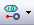
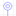

Consejo
ESTE DOCUMENTO NO ES PARTE DE LA DOCUMENTACION DE PADS
Resumen para ¶
- Esquemático PADS Maker Schematic
- PCB PADS Maker Layout
Esquemático¶
Nuevo Proyecto¶
en “Start Page”, escoge en “New Project” > Design
Nueva Hoja¶
pg down en la última hoja activa
Cambiar tamaño de página¶
- Deselecciona todo
- en “Properties”, cambiar “Drawing size” y “orientation”
- En página,
RClick> Change border… para escoger un borde adecuado
Mostrar Partes¶
View > Parts
Partes¶
Agregar¶
- Escoge símbolo en PADS Databook
- arrastra y suelta en la página
Con Nets¶
Activa “Add Nets”
Con nombres de nets¶
Activa también “Add Net Names”
Agregar tierra, VDD, links, etc¶
Add > Special Components o 
Consejo
- Una misma parte puede tener múltiples símbolos!
- Si colocas una parte sobre una net, será cortada automáticamente!
Manipulación¶
Rotar¶
F3 o con 
Reflejo Horizontal¶
F4 o 
Espejo Vertical¶
F5 o 
Arreglo¶
- Selecciona componentes

- Define filas y columnas
- Define separación
Duplicar¶
- Selecciona objeto, luego
Ctrl+C,Ctrl+V, o - Selecciona objeto, luego
Ctrl+LClick, arrastra y despuésLClick
Nets¶
Nueva Net¶
no
LClickal inicio- Draw and
LClickal final
Agregar nets a pines¶
- n o
Alt+LClicksobre el pin
Bus¶
Agregar¶
bo
LClickpara dibujarESC- En Properties > Name, asigna NET_NAME[n:0]
Extraer nets desde el bus¶
- RClick en Bus > Rip Nets
- Selecciona nets (
Ctrl= multi) LClick
Conectar un símbolo a un bus¶
- Toca el bus con los pines del símbolo
- Selecciona los índices y el orden
- Aleja el símbolo del bus para dibujar las nets
Links¶
Configuración¶
- Setup > Settings
- En Cross Probing, activa “Zoom Fit to Selected objects”
- En Advanced, activa “Automatically synchronize Links and net names”
- Click OK
Agregar¶
- En My Parts > Special Components > Link
- Conectar link a una net
- In properties, escoge un nombre para el link
- Agrega otro Link con la misma net
Filtros de Selección¶
 y luego selecciona los tipos de elementos habilitados
y luego selecciona los tipos de elementos habilitados
Agregar filtros personalizados¶
Escoge “settings…” en combobox
Create a PCB from schematics¶
- Tools > Prepare for Layout
- ECO > Forward Annotation. Select filename.
PCB¶
Comenzar¶
- Abrir PADS Maker Layout
- Tasks > New > Select Layers Board
- File > Import… y escoger .dnf file creado en esquemático
- Escoger los footprints faltantes si es necesario
Contornos y zonas restringidas¶

Editar contorno¶
- Borrar selección
RClick> Select Board Outline- Selecciona la línea de contorno y edita
Agregar restricción¶
 >
>  , dibuja y define parámetros
, dibuja y define parámetros
Capas¶
Definir Capas¶
Setup > Layer Definition
Cambiar el número de capas¶
- Click Modify
- Definir el nuevo número
- Revisar reasignación de capas
Selección¶
Sencilla¶
LClick
Región¶
LClick y arrastra
Agregar/quitar de la selección¶
Ctrl+LClick en el objeto
Visibility¶
Nets Colors¶
Ctrl+Alt+N- Select net or class
- Click “Add”
- Set color and what to show
- Check “color traces by net” to show trace with the same color
Parts Placement¶
Disperse¶
Tools > Disperse Components
Move components¶
- Pick part
Ctrl+EorLClick and drag
Rotate¶
Ctrl+R or tab
Change layer¶
Rclick > Flip Side or Ctrl+F
Reglas de Diseño¶
Abrir Diálogo¶
Setup > Design Rules… y escoger ámbito:
Nota
Ámbitos - Default reglas para todas las nets- Net Reglas para nets en particular, sobreescribiendo Default
Consejo
- «Report» genera un reporte con las reglas
Nota
Secciones - Clearance Anchos de pistas y separaciones - Routing Capas donde se puede rutear y tipos de vías
Definir ancho de pistas¶
Clearance > Trace width
Definir separation para nets diferentes¶
Clearance > Clerance section
Definir separación de objetos de la misma net¶
Clearance > Same net Section
Permitir vías en SMD¶
Clearance > Same net > Via/SMD set 0
Separación de componentes¶
Clearance > Other > Body to Body
Separación de perforaciones¶
Clearance > Other > Drill to drill
Definir capas habilitadas para rutear¶
Routing > Layer biasing (selected = habilitada)
Definir tipos de vías autorizados¶
Routing > Vias (selected = habilitado)
Definir número máximo de vías¶
Routing > maximum number of vias
Ruteo¶
Activar Dynamic Route and Bus Route¶
- Tools > Options > Design
- Activa On-line DRC a Prevent
Comenzar¶
RClick> Select Pins/Traces/Unroutes
Comenzar ruteo¶
LClicksobre el pin o pistaF3
Confirmar un segmento¶
LClick o espacio
Deshacer un segmento¶
Backspace
Cambiar Capa¶
F4 o l<n>
Autocompletar¶
Doble LClick
Detener Ruteo¶
Ctrl+LClick
Cambiar Ancho¶
w<width>
Agregar una vía¶
Shift+LClick
Agregar un testpoint¶
Mientras se rutea: RClick > Add testpoint
Agregar un jumper¶
- Mientra se rutea
RClick> Add jumper - Definir orientación y largo
Vía en SMD¶
RClick> Select Traces/PinsLClicken el padRClick> Add Via at SMD
Consejo
Para habilitar vía en SMD, distancia vía a pad para la misma net debe ser cero
Bus Route¶
- Rclick > Select Pins/Vias/Tacks
- Seleccionar pines a rutear como bus
- RClick > Bus Route
Consejo
Si uno de las pistas no puede ser ruteada automáticamente, se pedirá rutear por separado.
Planos de Cobre¶
Agregar¶
- para cobre sólido o
 para relleno o
para relleno o  para planos sólo en capas de tipo “mixed plane”
para planos sólo en capas de tipo “mixed plane” - Dibujar Figura
Agregar corte¶
- para cobre sólido o para relleno o
 para planos sólo en capas de tipo “mixed plane”
para planos sólo en capas de tipo “mixed plane”
Editar¶
- Borrar Selección
- RClick > Select Board Outline
- Escoge trazo del polígono y edita
Truco
RCLick para más opciones de polígonos
Vias¶
Nota
- Pad stack La forma de la vía en las capas
- Via Span La vía predeterminada para pasar de una capa a otra
- Through Via Vía que atraviesa toda las capas
- Partial Via Vía que atraviesa sólo algunas capas (vías blind y buried)
Setup¶
Set via Pad Stacks¶
- En Layout (
 ) Setup > Pad Stacks
) Setup > Pad Stacks - Pad Stack type a Via
- Selecciona vía y cambia propiedades
Agregar un vía padstack¶
- In “Pad Stacks”, defina tipo de Vía, luego Click en “Add Via”
- Elegir “through” o “partial”
- Define capa de inicio y fin para partial vias
- Define estilos de pads for pad y thermal
Define vías predeterminados¶
- Setup > Design Rules… > Default > Routing
- En “Vias”, selecciona vías (selected = habilitada)
Partes¶
Símbolos¶
Consejo
Use PADS Maker Schematic
Nuevo Símbolo¶
En un diseño existente: File > New > Symbol
Nuevo símbolo (tipo caja)¶
- Crear csv desde template
- En un diseño existente: File > New > Symbol from Pin List
Consejo
Check wiki help «Creating and Editing Parts/Symbols», Method #3 for excel template
Footprints¶
Consejo
Use PADS Maker Layout
Agregar un footprint (decal)¶
- Seleccionar sección y partición
- Sobre la Partición
RClick> New Decal… - Si es posible, usar Decal Wizard
Usar Decal Wizard¶
- >

- En la parte inferior, escoger unidades
- Escoger tipo (dual, quad, polar, BGA/PGA)
- Completar datos, click en OK.